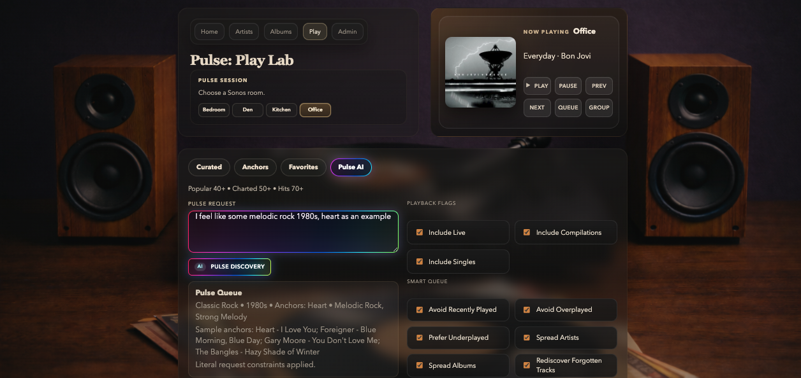

Local music catalogue
Models the collection as artists, albums, tracks, metadata, and listening-ready relationships.
The music layer for catalogue intelligence, voice requests, room-aware playback, and adaptive listening.
Pulse Player connects a local music collection with AI-assisted queue building, listening context, and the rooms where music is actually played.

Models the collection as artists, albums, tracks, metadata, and listening-ready relationships.
Listener-facing pages focus on artists, albums, album detail, and collection depth.
Listening briefs, era, genre, mood, artists, and room context shape stronger playback choices.
Room selection is the commit action for playback, with shared controls across album, artist, and browser pages.
Collection management, intake, metadata, and maintenance stay away from the listening surface.
Natural requests can move directly into artist, album, queue, or room-aware playback.
Pulse Player can respond to voice, room state, listening history, and mood while sharing context with the rest of the Pulse platform.